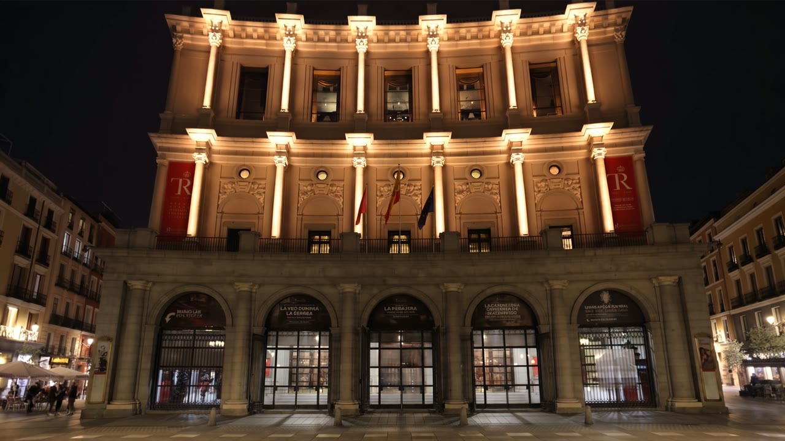
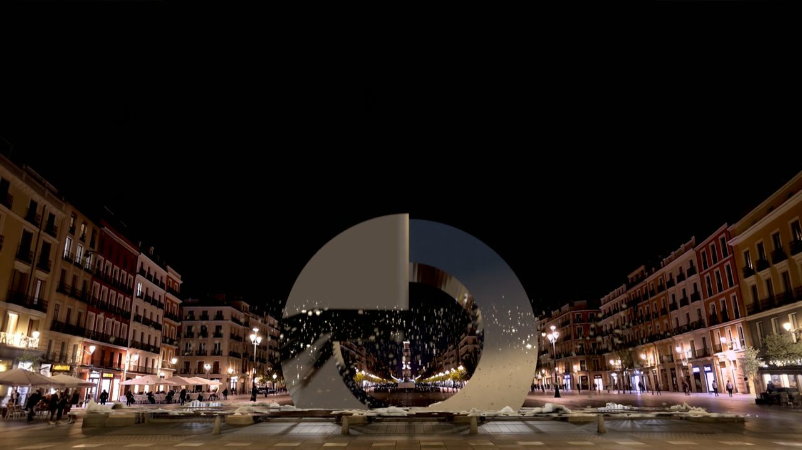
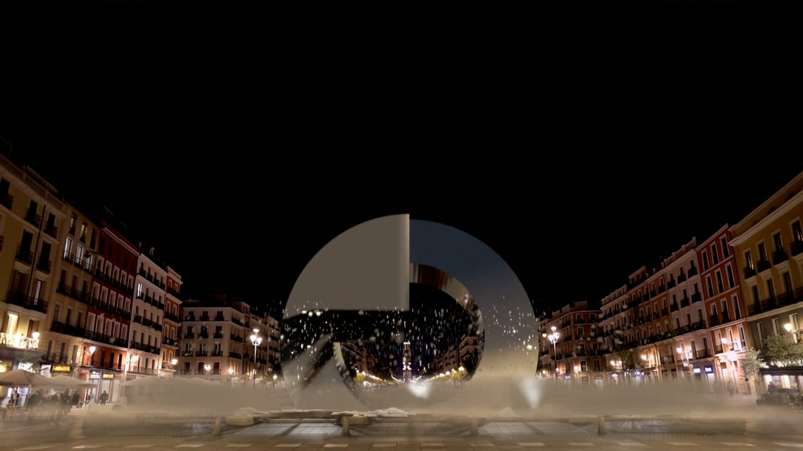
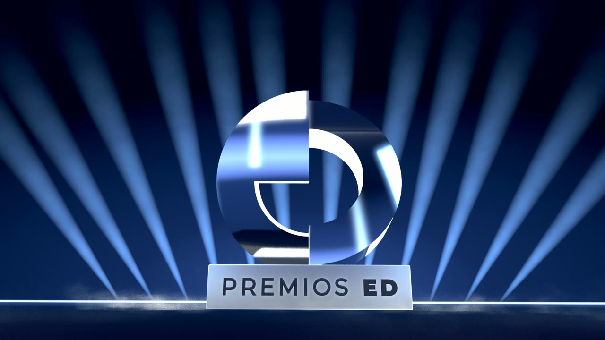

01 · FOOH · 3D + VFX + IAAI
El Teatro Real de Madrid se desintegra en polvo y de su hueco surge el galardón. Pieza de apertura de una gala de premios, proyectada en el propio teatro.Madrid's Teatro Real crumbles into dust and an award rises from the void. Opening piece for an awards gala, screened inside the theatre itself.
El reto: que un edificio real, grabado en plena plaza, se deshiciera de forma creíble en un solo plano y sin cortes.The challenge: make a real building, shot in a live square, dissolve believably in one continuous shot.
La solución: limpié la placa con IA (sin gente y con la plaza vacía detrás del teatro), reconstruí la fachada en Blender proyectando el vídeo sobre la geometría, la desintegré con una simulación de polvo en Mantaflow y lo integré todo en After Effects. Automaticé el pipeline con scripts de Python para iterar rápido.The solution: I cleaned the plate with AI (no people, empty square behind the theatre), rebuilt the façade in Blender by projecting the footage onto geometry, dissolved it with a Mantaflow dust simulation and composited everything in After Effects. The pipeline was automated with Python scripts to iterate fast.

01
Placa limpiaClean plate
Gente borrada y fondo sin teatro generados con IA (Kling, Gemini) y casados con la toma real.People removed and theatre-free background generated with AI (Kling, Gemini), matched to the real shot.

02
3D en Blender3D in Blender
Fachada proyectada sobre geometría, desintegración por máscaras animadas y galardón en cromo.Façade projected onto geometry, dissolve driven by animated masks, chrome award.

03
Polvo y luzDust and light
Simulación de humo en Mantaflow, pase de polvo aparte en Cycles y focos volumétricos.Mantaflow smoke sim, separate Cycles dust pass and volumetric spotlights.

04
Composición finalFinal comp
Integración, glow, color y ritmo en After Effects; montaje con música y voz.Integration, glow, colour and timing in After Effects; edit with music and voice-over.
ContactoContact
Disponible para proyectos freelance y puestos en remoto o en Madrid.Available for freelance projects and remote or Madrid-based roles.